Apartment and home outfit review
View the SIX GENERATED OUTFIT IMAGES
Current status: owner accepted the background; outfit generation completed. The earlier background review below is historical and no longer blocks generation.
12 existing images inspected; 3 new environment PNGs generated for 3 quoted credits. All three require revision. Six outfit images are now generated; see the gallery above. No approval or promotion. PASS means ready for human review only.
The day image is the best partial corner reference, not a complete floor plan. Review the proposed unseen geography, mirror pair, closet jacket baseline, chair orientation and flat-topped Axiom view before spending.
Apartment canon proposal · Production plan · Full inspection and original hashes
New candidates · September 16
The mirror correction succeeded. The requested square floor grid and evening lighting have not passed. Generation stopped before copying these defects into outfit scenes.
apartment-layout-canon-v1
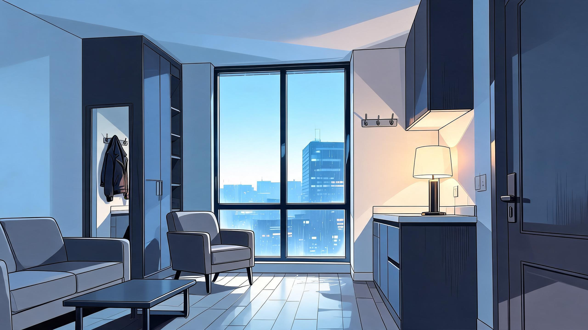
REVISE · staging / pending
- Style, window divisions, skyline and main furnishings remain recognizable.
- Mirror contains a ghost jacket absent from the real empty hooks.
- Floor reads as narrow planks instead of specified square ceramic tiles. Do not use this as a scene master.
apartment-evening-v1
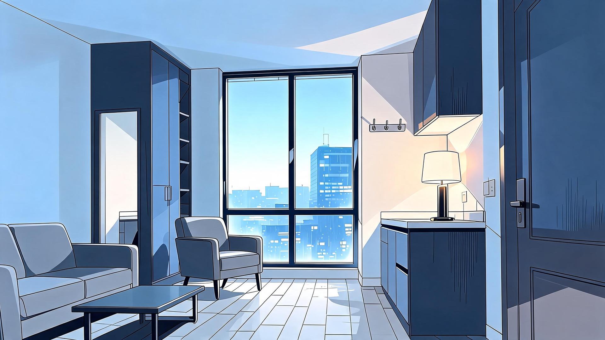
REVISE · staging / pending
- Window, skyline, furniture, mirror and cabinet positions remain coherent; ghost jacket stays removed.
- Floor still reads as narrow elongated rows rather than specified broad square tiles.
- Exterior and overall lighting remain close to daylight rather than the requested muted early evening.
- Do not use as a passing scene background or promote into canon.
apartment-layout-corrected-v1
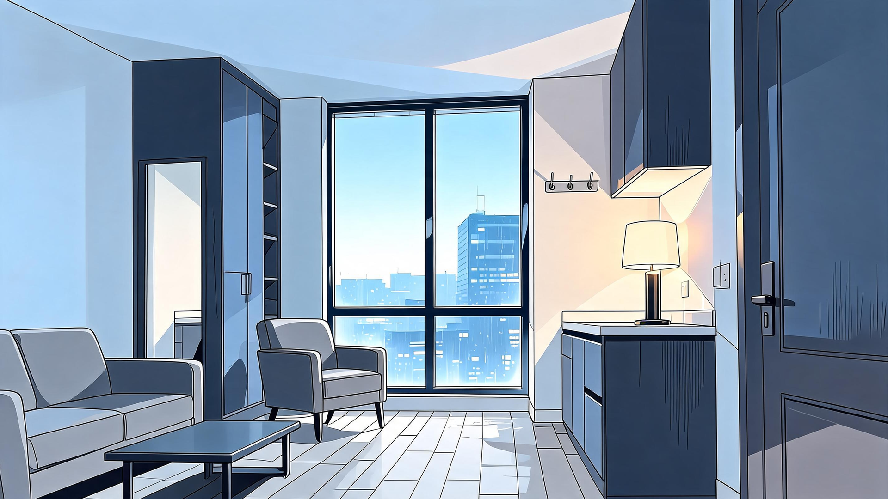
REVISE · staging / pending
- Ghost jacket removed; same window, chair, mirror, sofa and counter relationships preserved.
- Floor still has elongated narrow tile rows; pending correction before outfit variants.
Outfit scenes now generated
Executive suit, socialite gown and shadow/plain dress, for pre- and post-Glass House home beats. All six outputs are saved in outfits.html; some consistency revisions are noted.
Original source inspection
eve-bg-apartment-day-v1
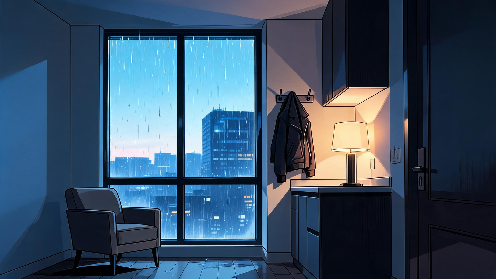
PASS · staging / pending
Partial reference only: strongest two-column window/chair/kitchen corner and restrained EVE style. Blue dawn is not neutral daytime. Unseen rooms, mirror and front entry remain unestablished. Jacket hook conflicts with closet baseline; clarify floor reflections. Not sufficient unchanged as whole-apartment canon.
eve-bg-apartment-night-v1
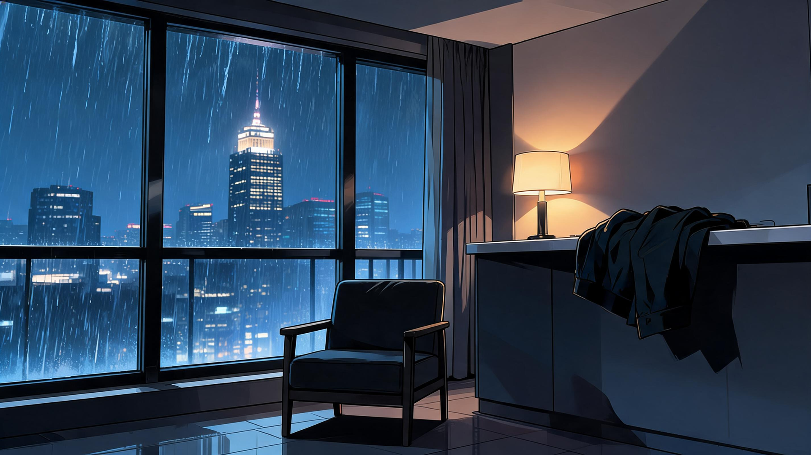
REVISE · staging / pending
Three window columns replace two; thin exposed chair arms/legs replace padded chair; wider counter, new curtain and spired skyline replace base geometry. Jacket migrates to counter. Derive night by relighting the accepted master, not this competing plan.
eve-scene-morning-v1
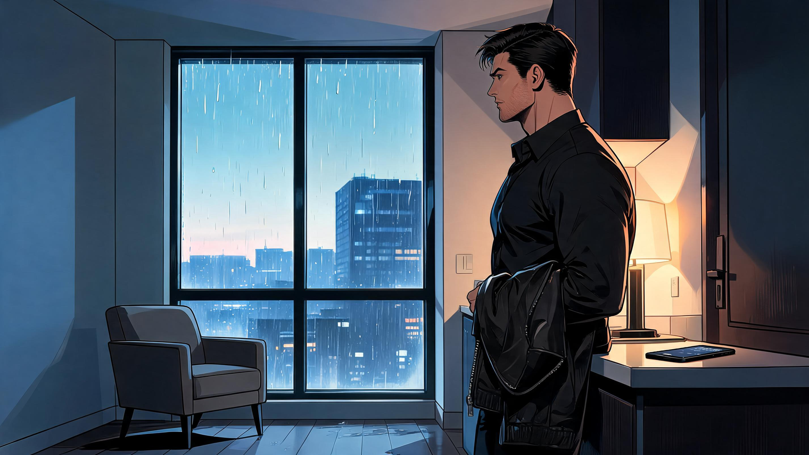
REVISE · staging / pending
Retains useful day corner, but counter projects differently and Adrian handles/wears the jacket before a generic opening node that still locates it in the closet. Use only an explicitly timed dressing/departure beat after geometry review; not a master reference.
eve-scene-home-before-v1
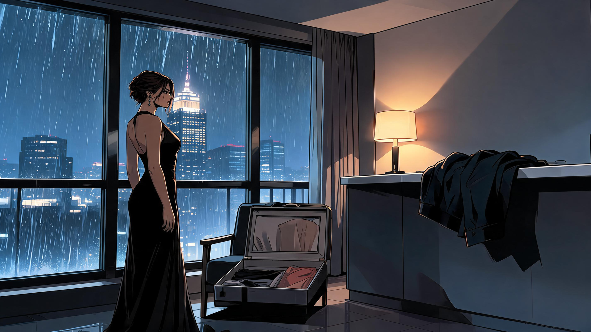
REVISE · staging / pending
Uses competing night window/chair plan at 18:02; open garment case is on chair instead of sealed beside wardrobe on arrival. Socialite-only clothing cannot represent all clinic-confirmed outfits. No layout authority.
eve-c3-home-v1
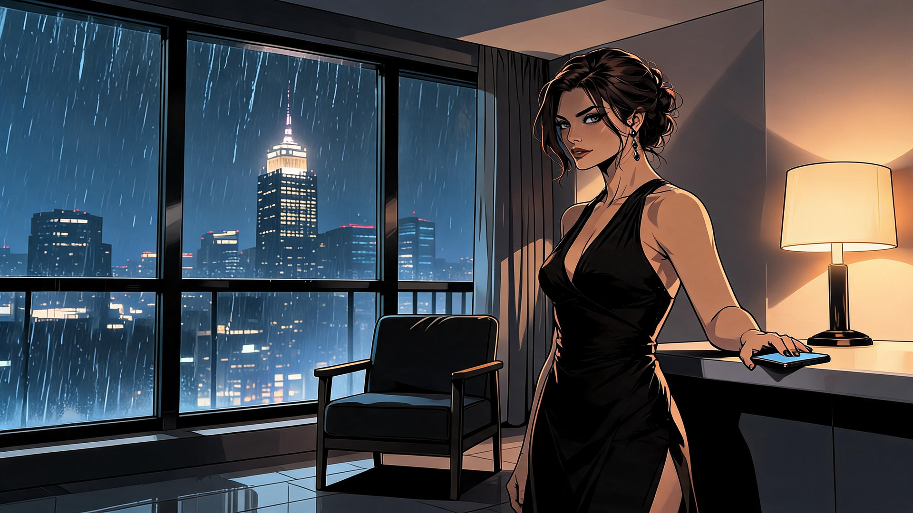
REVISE · staging / pending
Inherits night window/chair/skyline redesign; counter/lamp arrangement shifts and foreground figure obscures geography. Gala gown is only one possible carried outfit. Rebuild from master for the correct outfit branch.
eve-c3-maya-v1
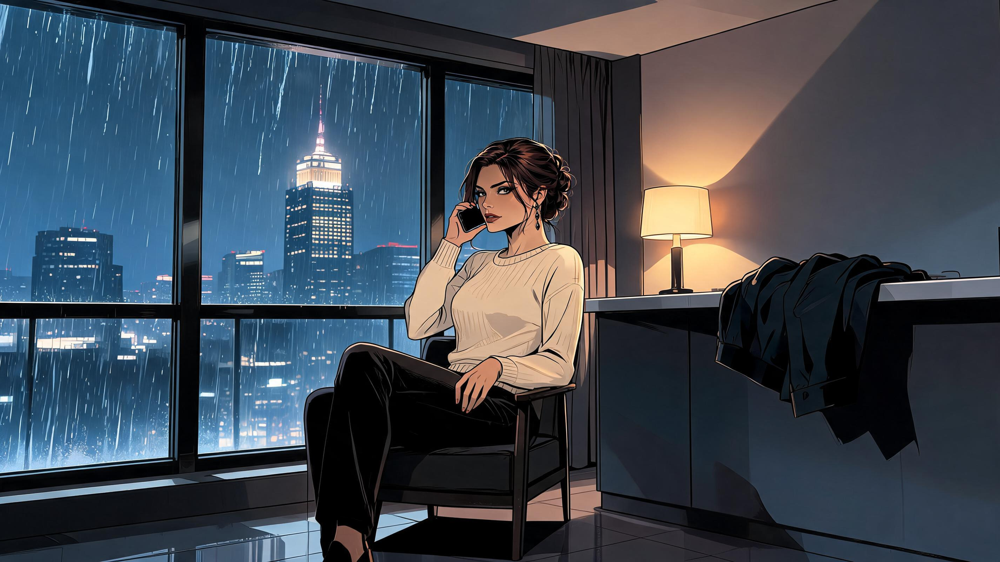
REVISE · staging / pending
Night geometry and thin chair repeat; casual sweater is not an automatically recorded change before the current Scene 2 call. Scene must require actual contact and authored wardrobe; maintain original padded chair footprint.
eve-c3-sender-v1
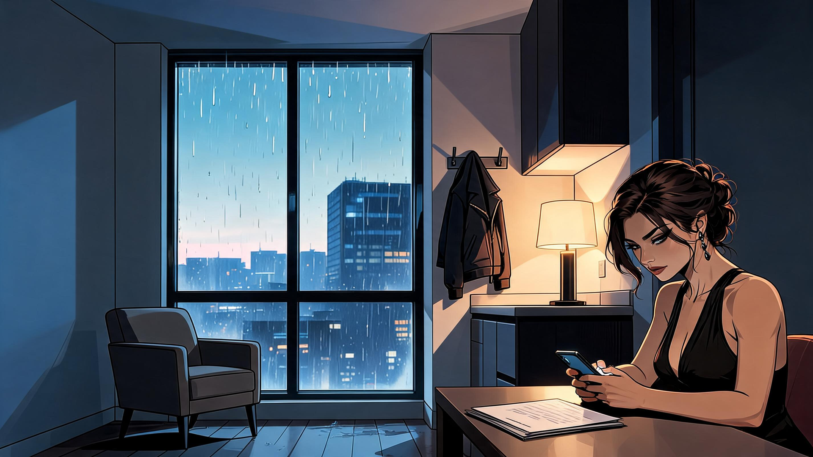
REVISE · staging / pending
Day corner recognizable, but adds an unlocated foreground table/chair and papers. Gala clothes and new documents are not universal late-morning state. Register work surface location first.
eve-c3-helix-contact-v1
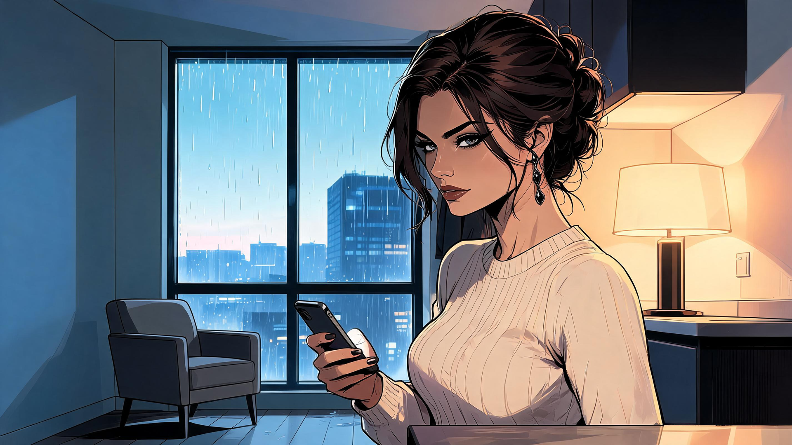
REVISE · staging / pending
Day corner recognizable; close crop/foreground counter and enlarged upper cabinet do not establish a new room angle. Sweater and extra surface remain unapproved. Derive from a named camera anchor.
eve-c3-verify-v1
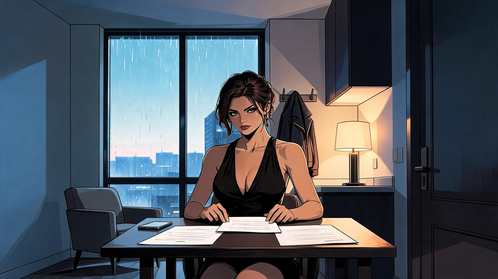
REVISE · staging / pending
Adds a broad foreground desk blocking original room relationship; document possession and gown are future branch-dependent, not baseline. Reposition only after work-surface anchor approval.
eve-c3-disclosures-v1
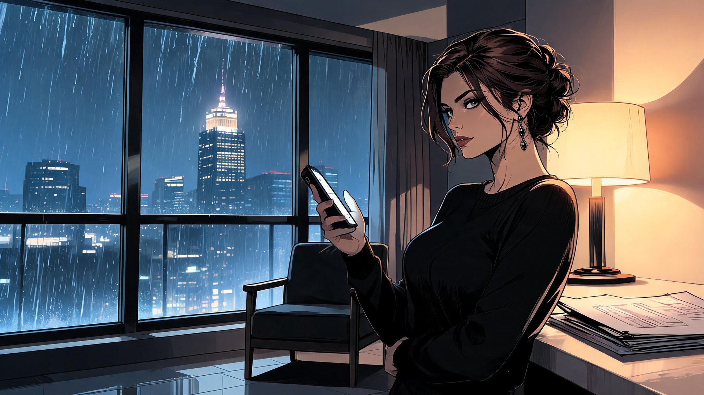
REVISE · staging / pending
Night geometry repeats and additional papers/garment details imply specific later state. Historical REVISE remains; preserve body/outfit continuity and a coherent, approved phone/surface arrangement.
eve-c3-commit-v1
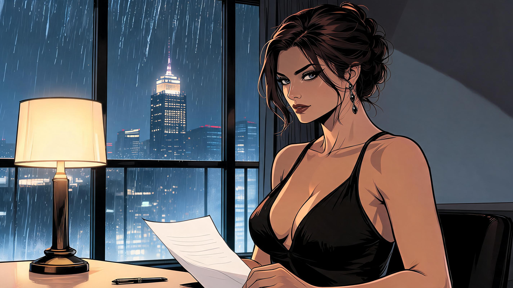
REVISE · staging / pending
Lamp migrates in front of window onto a new table; its base changes. Night grid/skyline and gala costume repeat. Return L1 to kitchen-end position and use approved work/couch anchor.
eve-c3-ending-v1
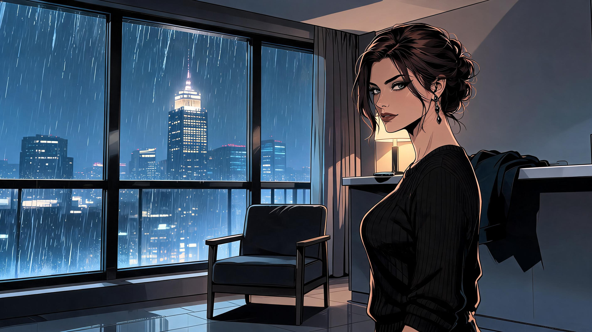
REVISE · staging / pending
Night grid, chair and skyline compete with base; sweater and rain are specific unapproved scene dressing. Ending image must follow authored outfit/weather rather than establish them.